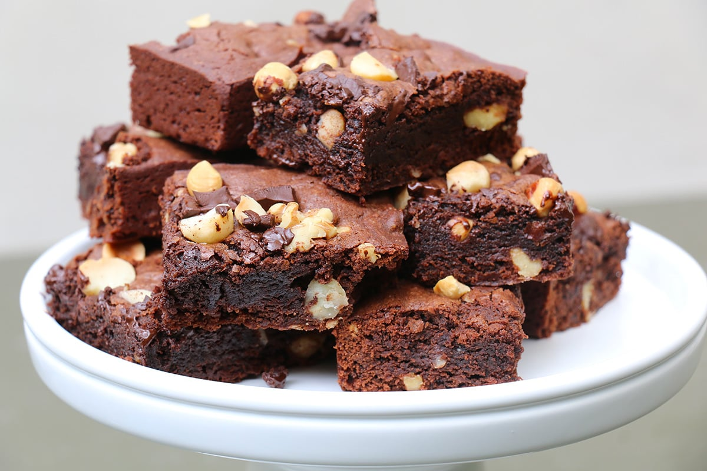

Brownies au chocolat rapide

Description
Ces brownies sont fondants au centre et
légèrement croustillant sur le dessus, avec un goût intense de chocolat.
Faciles et rapides à préparer, ils sont parfaits pour un goûter ou un dessert improvisé.
Leur texture moelleuse fait plaisir aux petits comme aux grands,
et ils degustent aussi bien tièdes que froids.
Ingrédients
- 100g de chocolat noir
- 50g de beurre
- 80g de sucre
- 2 oeufs
- 50g de farine
- 1 pincénde sel
- Huile de palme ou huile végétale
Etapes
- Préchauffe le four à 180 °C.
- Fais fondre le chocolat avec le beurre au bain-marie ou au micro-ondes.
- Dans un bbol, bats les oeufs avecle sucre jusqu'à ce que le mélange blanchisse.
- Ajoute le mélange chocolat-beurre fondu aux oeufs, puis incorpore la farine et le sel.
- Verse la pâtebdabs un petit moule beurré ou recouvert de papier cuisson.
- Enfourne 15 à 20 minutes.
- Laisse refroidir un peu avant de couper.
Accueil